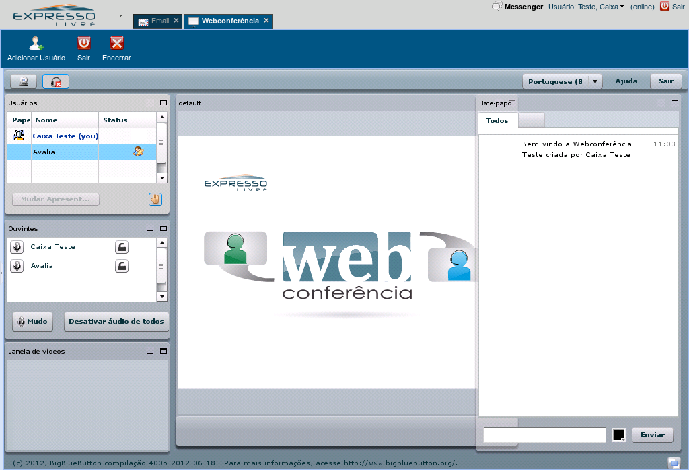
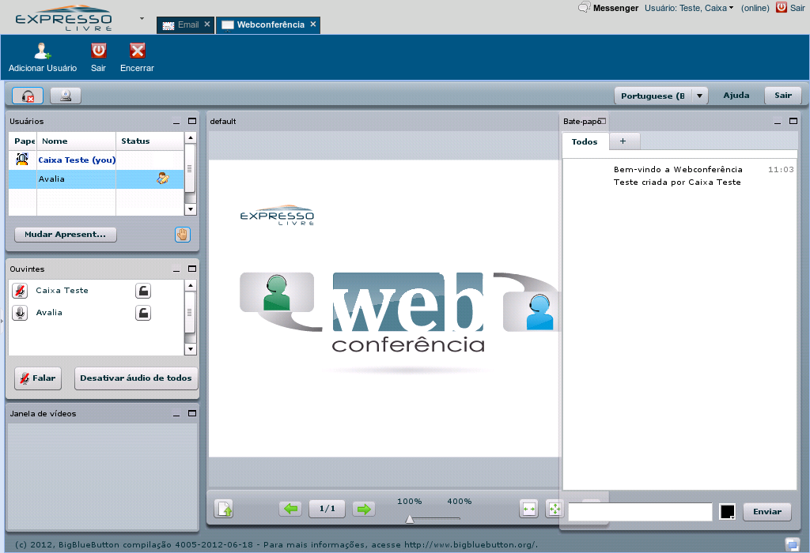
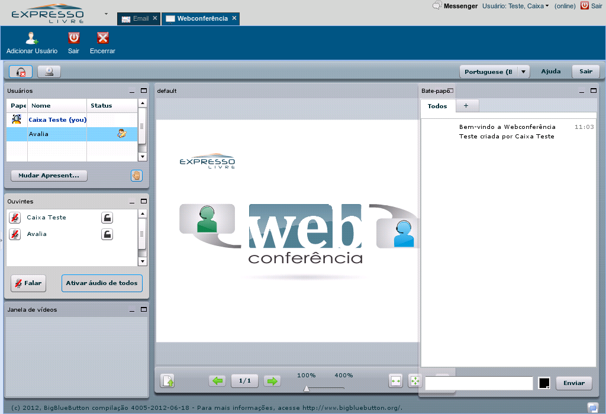
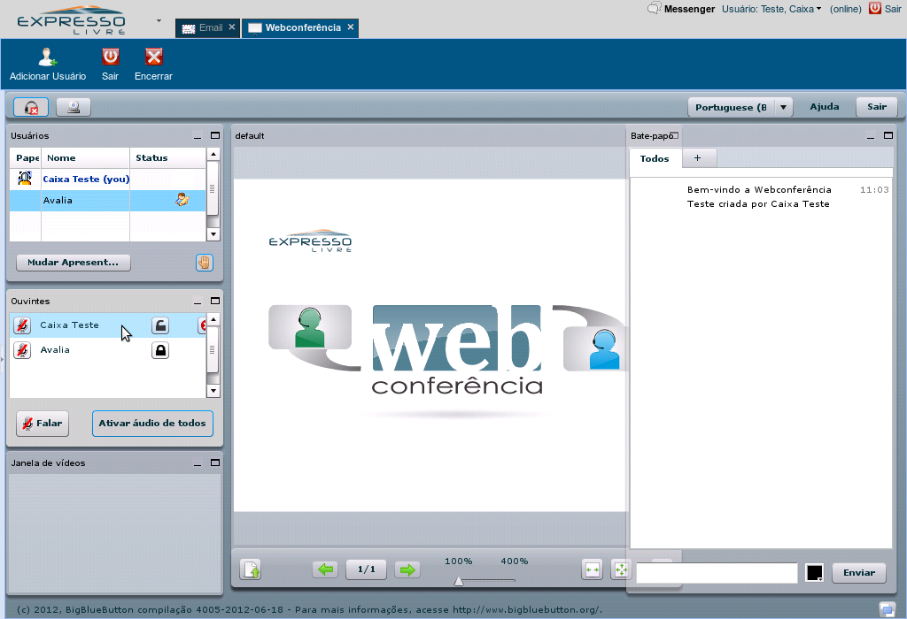

Existem três papéis numa conferência: o moderador, que controla a conferência, o apresentador, que controla o que está aparecendo na janela principal, e o participante.
Referência (copie para o Mantis o texto em vermelho):
demo_.html?interacao=530
531
2
206
8_180_32_18_261_140_-16_41
(Etapa xx de 10)
Os moderadores são identificados pelo símbolo de moderação ao lado do nome, na janela "Usuários"
Referência (copie para o Mantis o texto em vermelho):
demo_.html?interacao=531
532
3
206
175_177_34_24_239_175_-16_10
(Etapa xx de 10)
Durante uma conferẽncia, pode existir apenas um apresentador, que é marcado pelo símbolo do apresentador.
Referência (copie para o Mantis o texto em vermelho):
demo_.html?interacao=532
2
demonstracao
533
1
207
8_198_137_94_178_198_-16_10
(Etapa xx de 10)
Os moderadores podem mudar o apresentador clicando em um dos nomes na janela "Usuários" e clicando no botão "Mudar Apresentador".Clique em um usuário
Referência (copie para o Mantis o texto em vermelho):
demo_.html?interacao=533
535
2
207
121_200_48_23_249_193_-16_10
(Etapa xx de 10)
Os moderadores também podem abaixar a mão dos usuários que pedirem a palavra durante a conferência.Clique no botão da mão
Referência (copie para o Mantis o texto em vermelho):
demo_.html?interacao=535
536
3
207
5_330_33_29_257_326_-16_10

(Etapa xx de 10)
Os moderadores podem silenciar os microfones dos ouvintes, clicando nos botões de microfone,Clique no botão de microfone
Referência (copie para o Mantis o texto em vermelho):
demo_.html?interacao=536
537
4
207
84_435_153_32_266_365_-16_75

(Etapa xx de 10)
e silenciar ou ativar todos os microfones da conferência usando o botão "Desativar/Ativar Áudio de Todos".Clique no botão "Desativar Áudio de Todos"
Referência (copie para o Mantis o texto em vermelho):
demo_.html?interacao=537
538
5
207
153_331_31_28_259_325_-16_10

(Etapa xx de 10)
Os moderadores também podem ativar e silenciar a caixa de som de um ouvinte clicando no botão de cadeado.Clique no botão de cadeado
Referência (copie para o Mantis o texto em vermelho):
demo_.html?interacao=538
4
demonstracao
540
1
209
6_330_225_29_268_326_-16_10

(Etapa xx de 10)
Ou, ainda, tirar um usuário da conferência colocando o mouse por cima do participante... e clicando no botão "Expulsar Usuário".Clique no botão de "Expulsar Usuário"
Referência (copie para o Mantis o texto em vermelho):
demo_.html?interacao=540
541
2
209
350_150_0_0_320_125_0_228
(Etapa xx de 10)
Veja o tópico "Participar de uma conferência" para saber mais sobre os comandos comuns a todos os usuários.
Referência (copie para o Mantis o texto em vermelho):